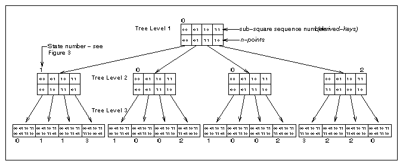

Outline
- What is a space-filling curve?
- Summary of the work undertaken
- Why research into multi-dimensional indexing?
- Why use space-filling curves?
- Mapping techniques
- Querying : an example
What is a space-filling curve?
- a line passing through every point in a space, in a particular order, according to some algorithm
- some curves pass through points once only and so each point lies a unique distance along the curve away from its beginning - these are the ones we are interested in
- examples include the Hilbert Curve and the Z-Order Curve
Summary of the work undertaken
- designed and implemented a fully functioning application for the storage and retrieval of multi-dimensional data
- it uses space-filling curves to map multi-dimensional data to one dimensional values
- currently, it works in up to 16 dimensions but can be easily extended
Why research into multi-dimensional indexing?
- despite the volume of previous work, it's a problem waiting for a generally accepted good solution
- data is being gathered in ever increasing volume
- this data is increasingly higher dimensional in nature
- growing aspirations for sophisticated data processing to extract valuable information
Why use space-filling curves?
- in mapping multi-dimensional space to one-dimensional values, they allow simple indexing methods to be used - like the B-tree
- unlike traditional hashing functions, they preserve in the one-dimensional values the proximity of points in space
- although of interest to the research community, most previous work relates to the theoretical clustering properties of the curves and little relates to practical implementation
What are the main problems associated with space-filling curves?
- how to map between 1 and n dimensions
- using state diagrams
- by calculation
- how to execute queries
- what information to store and how to store it

Conclusions